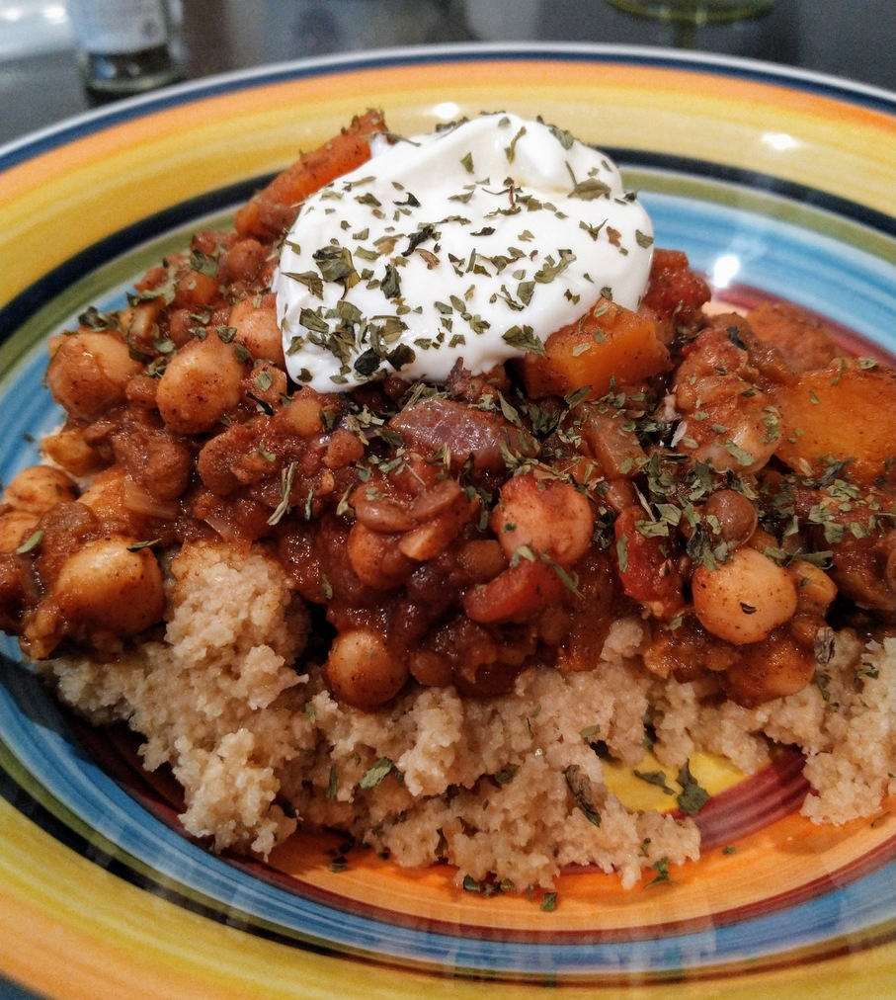

Moroccan Style Lentil & Chickpea Casserole

- Cous Cous
- Coconut oil
- Onion
- 1 3/4 tsp ground cinnamon
- 3/4 tsp Cumin
- 1 1/4 tsp ground coriander seed
- 2 garlic cloves minced
- 2 cups vegetable stock
- 1 can of crushed or diced tomatoes
- 1 can brown lentils
- 1 can chickpeas
- 1 carrot, preboiled
Heat oil in dutch oven Saute onion Add in spices and stir for 2 mins Add broth, carrot, tomatoes, lentils and chicpeas Simmer for 10-15 mins until some of the water has boiled off Serve with cous cous or quinoa Granish with yoghurt, lemon and coriander leaves